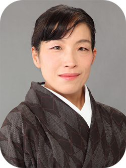

教員・学生研究紹介

Mine Sato
佐藤 峰
国際開発学、社会人類学、
コミュニティデザイン
（中南米、日本）
Q1.現在の研究テーマ（または専門分野）について教えてください。
すごく簡単にいうと、「定常のコミュニティデザイン」がテーマです。ゼロ成長や資源制約を前提として、「当事者主体で持続可能な地域づくりの実現」の諸条件は何かということを、国際開発学と人類学をベースに探求しています。いまの日本の現状を見ても明確な通り、物質的な成長ということを前提にした社会構想や実装は不可能になりつつあります。
身の回りにあるものを最大限に活用した、無理のない個人や集団の「自立」やウェルビーイングはどのように実現するのか。身の丈感覚を大事にした住民参加型のまちづくりはどんな条件で成立し長続きするのか。そのような地域づくりはどのような制度環境や社会構想により下支えされるのか。ということを途上国と先進国という枠を超えて、研究と実践を往還する形で考えています。
（具体的な研究内容については、個人サイトをご覧ください。）
https://minesato.com
ニカラグア共和国、ワスパン郡での午後のひととき
Q2.教員になるまで、どんな学術・実務上の経験がありますか？
大学生の時から発展途上国に関わる研究や実践をしていました。当時（９０年代）の日本には十分な研究環境がまだ無く、国際開発学の修士号は英国で取得しました。その後青年海外協力隊の一員として中米にあるニカラグアに行きました。博士課程は米国の大学院でしたが、博論を書きながら、JICAの長期専門家としてニカラグアで働いたり、ユニセフの職員として２年間パキスタンで勤務したりと、海外において研究と実践を往還してきました。日本に帰国後は、JICA（国際協力機構）職員およびJICA研究所（現緒方貞子平和開発研究所）での勤務を経て大学教員になりました。
JICA研究所において主査およびメンバーを務めたプロジェクトのリンクはこちら：
- https://www.jica.go.jp/jica-ri/ja/research/strategies/strategies_20130101-20150331.html
- https://www.jica.go.jp/jica-ri/ja/research/strategies/strategies_20111201-20140331.html
- https://www.jica.go.jp/jica-ri/ja/research/strategies/strategies_20090401-20130331.html
- https://www.jica.go.jp/jica-ri/ja/research/strategies/strategies_20081112-20120331.html
Q3.研究指導で大切にしていることについて教えてください。
研究職についている者が言うのもおかしな話ですが、 「なんとか学」と言うことよりも、他の人がまだやっていなくて、自分自身が継続的な好奇心と親しみを持って取り組めるテーマを見つけることがまず大事です。ワクワクすること、楽しいこと、あるいはしんみりとした思いをいただいているか、それはとても大事なことです。
そして、そのテーマをより深めるために深く理解するために、複数の学問領域における優れた先行研究を組み合わせることが出来るかが、学術的に価値があり社会にも有益な研究をするための必須条件だと思っています。
私の場合には、自分が里山の自然が近くにある郊外コミュニティで育っていることもあり、意識しなくても、どうも大都会よりも里山に足が向かっていくなと思っています。自分が何を研究するかということは、案外、自分が何者かを知る筋道だなと思っています。
写真のキャプション：長野県松川町での女性グループの方々と
Q4受験生へメッセージ（大学院生へ）
この大学院のコースは小さいですが、多様な人文社会科学の領域の専門家が存在しますし、実務の経験を豊富に持つ教員も複数います。そのリソースを活用して、長く付き合える問いに出会い、深めて行っていただければと思います。